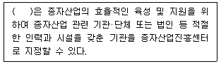
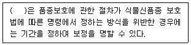
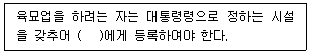
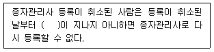
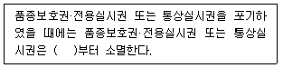

종자기사 (2022-04-24 기출문제)
1과목: 종자생산학
1. 다음 중 종자의 수명이 가장 긴 종자는?
- 고추
- 토마토
- 파
- 팬지
(정답률: 61%)

2. 종자의 형상이 능각형인 것으로만 나열된 것은?
- 배추, 양귀비
- 참나무, 모시풀
- 보리, 작약
- 삼, 메밀
(정답률: 61%)
3. 품종의 유전적 순도를 높일 수 있는 방법으로 틀린 것은?
- 인공수분
- 격리재배
- 개화 전의 이형주 제거
- 염수선에 의한 종자의 정선
(정답률: 60%)
4. 메밀이나 해바라기와 같이 종자가 과피의 어느 한 줄에 붙어 있어 열개하지 않는 것을 무엇이라 하는가?
- 장과
- 수과
- 핵과
- 이과
(정답률: 53%)
5. 다음 중 종자의 휴면타파법으로 틀린 것은?
- 변온 처리
- 석회 처리
- 농황산 처리
- 지베렐린 처리
(정답률: 50%)
6. 다음 중 교잡 시 개화기 조절을 위하여 적심을 하는 작물로 가장 옳은 것은?
- 상추
- 참외
- 양파
- 토마토
(정답률: 58%)
7. 4계성 딸기에 대한 설명으로 틀린 것은?
- 우리나라에서는 주로 여름철 재배에 이용된다.
- 주년(周年) 개화·착과 되는 특성을 갖는다.
- 저위도 지방의 원산지에서 유래한 것이다.
- 종자번식이 용이하다.
(정답률: 40%)
8. 산형화서의 형상으로 종자가 발달하는 작물이 아닌 것은?
- 양파
- 부추
- 보리
- 파
(정답률: 50%)
9. 다음 중 춘화처리를 실시하는 가장 큰 이유는?
- 발아억제
- 생장억제
- 화성유도
- 휴면타파
(정답률: 64%)
10. 고구마의 개화 유도 및 촉진 방법으로 틀린 것은?
- 나팔꽃의 대목에 고구마 순을 접목한다.
- 14시간 이사의 장일처리를 한다.
- 고구마덩굴의 기부에 환상박피를 한다.
- 고구마덩굴의 기부에 절상을 낸다.
(정답률: 43%)
11. 양파의 1대 교잡종 채종에 쓰이는 유전적 특성은?
- 자가불화합성
- 웅성불임성
- 자식약세
- 자가화합성
(정답률: 56%)
12. 발아억제물질이 있는 부위가 영이며, 억제물질이 phenolic acid에 해당하는 것은?
- 단풍나무
- 장미
- 보리
- 사탕무
(정답률: 43%)
13. 다음 중 무한화서에 속하는 것은?
- 총상화서
- 단성화서
- 단집산화서
- 복집산화서
(정답률: 58%)
14. 기본식물에 유래된 종자를 무엇이라 하는가?
- 원종
- 원원종
- 보급종
- 장려품종
(정답률: 63%)
15. 다음 중 자가수정만 하는 작물로만 나열된 것은?
- 호박, 무
- 강낭콩, 완두
- 옥수수, 호밀
- 오이, 수박
(정답률: 62%)
16. “주피에 있는 구멍으로서 그 구멍을 통하여 자란 화분관이 난세포와 결합한다”에 해당하는 것은?
- 알레로파시
- 주심
- 주공
- 주병
(정답률: 58%)
17. 배추과 작물의 채종에 대한 설명으로 옳지않은 것은?
- 배추과 채소는 주로 인공교배를 실시한다.
- 자연교잡을 방지하기 위한 격리재배가 필요하다.
- 등숙기로부터 수확기까지는 비가 적게 내리는 지역이 좋다.
- 배추과 채소의 보급품종 대부분은 1대잡종이다.
(정답률: 43%)
18. 광과 종자 발아에 대한 설명으로 틀린 것은?
- 종자 발아가 억제되는 광 파장은 700~750nm 정도이다.
- 종자 발아의 광가역성에 관여하는 물질은 cytochrome이다.
- 광이 없어야 발아가 촉진되는 종자도 있다.
- 광은 종자 발아와 아무런 관계가 없는 경우도 있다.
(정답률: 43%)
19. 다음 중 배유의 형성은?
- 정핵과 조세포의 융합
- 정핵과 반족세포의 융합
- 정핵과 난핵의 융합
- 정핵과 극핵의 융합
(정답률: 50%)
20. 수박의 꽃에 대한 설명으로 옳지 않은 것은?
- 단위 결과로 만들어진 종자가 다음 대에 씨없는 수박이 된다.
- 암꽃의 씨방에서는 여러 개의 배주가 생긴다.
- 오전 이른 시각에 수정이 잘 된다.
- 단성화이다.
(정답률: 37%)
2과목: 식물육종학
21. 교잡육종을 위해 교배친을 선정하는데 고려할 사항이 아닌 것은?
- 특성조사성적
- 춘화처리능력
- 과거실적검토
- 근연계수이용
(정답률: 41%)
22. 자연교잡에 의한 배추과(십자화과) 채소품종이 퇴화를 막기 위하여 채종재배 시 사용할 수 있는 방법으로 가장 적당한 것으로만 나열된 것은?
- 옥신 처리, 수경재배
- 에틸렌 처리, 외딴섬재배
- 외딴섬재배, 망실재배
- 수경재배, B-9 처리
(정답률: 41%)
23. 다음 중 분리 육종법에 해당하는 것은?
- 집단 육종법
- 여교잡 육종법
- 계통 분리법
- 파생계통 육종법
(정답률: 53%)
24. 염색체의 부분적 이상 중 역위는 무엇인가?
- 염색체의 일부가 과잉상태로 되어 있는 경우
- 기존의 유전자 배열순서가 바뀌어서 배열하는 현상
- 염색체의 일부가 절단되어 결실이 생기는 경우
- 절달된 염색체의 일부가 다른 염색체에 부착되는 경우
(정답률: 62%)
25. 인공교배에 의한 교잡육종기술을 크게 발전시키는데 이론적 근거를 제공해 준 이론은?
- 몰간의 염색체설
- 멘델의 유전법칙
- 다윈의 진화론
- 뮐러의 돌연변이설
(정답률: 58%)
26. 1염색체식물을 옳게 나타낸 것은?
- 2n+1
- 2n-1
- n
- 2n+2
(정답률: 48%)
27. 재배 벼 중 일본형 벼는 식물분류학상 어디에 속하는가?
- 속
- 목
- 문
- 아종
(정답률: 41%)
28. 염색체 배가에 가장 효과적인 방법은?
- 콜히친 처리
- NAA 처리
- 저온 처리
- 고온 처리
(정답률: 58%)
29. 교배친(P1, P2), F1 및 F2의 분산 값이 다음과 같을 때 넓은 의미의 유전력은 얼마인가? (단, 분산은 P1,=28, P2,=27, F1=38, F2=62 이다.)
- 20%
- 50%
- 60%
- 15%
(정답률: 45%)
30. 기본적인 육종과정이 가장 바르게 나열된 것은?
- 재료집단수집 → 선발 및 고정 → 지역적응시험 → 생산력검정 → 품종등록 → 증식 및 보급
- 재료집단수집 → 생산력검정 → 선발 및 고정 → 지역적응시험 → 품종등록 → 증식 및 보급
- 재료집단수집 → 지역적응시험 → 선발 및 고정 → 생산력검정 → 품종등록 → 증식 및 보급
- 재료집단수집 → 선발 및 고정 → 생산력검정 → 지역적응시험 → 품종등록 → 증식 및 보급
(정답률: 43%)
31. 작물의 타가수정률을 높이는 기작이 아닌 것은?
- 폐화수정
- 웅성불임성
- 자가불화합성
- 자웅이숙
(정답률: 37%)
32. 인공교배 육종 시 춘화처리를 하는 주된 목적은?
- 결실률의 향상
- 수정의 촉진
- 개화기의 조절
- 교배립의 등숙기간 단축
(정답률: 53%)
33. 게놈이 다른 타종, 타속의 우량한 형질을 재배종에 도입하고자 할 때 효과적으로 사용할 수 있는 육종법은?
- 일수일열법
- 돌연변이 육종법
- 여교잡 육종법
- 근계 교배법
(정답률: 56%)
34. 30개의 아미노산으로 형성된 효소를 합성하는데 필요한 최소한의 DNA 염기의 수는 얼마인가?
- 30
- 60
- 90
- 120
(정답률: 35%)
35. 식물세포에서 단백질 합성 장소는?
- 리보솜
- 엽록체
- 미토콘드리아
- 액포
(정답률: 43%)
36. 감자와 토마토로 육성된 포마토는 어떠한 육종 방법을 이용하였는가?
- 배배양
- 약배양
- 원형질체융합
- 염색체배양
(정답률: 40%)
37. 피자식물은 중복수정을 하는데 수정 후 배와 배유의 염색체수를 옳게 나타낸 것은?
- 배는 2n이고, 배유는 n이다.
- 배는 n이고, 배유는 2n이다.
- 배는 2n이고, 배유는 3n이다.
- 배는 2n이고, 배유는 4n이다.
(정답률: 48%)
38. 신품종의 유전적 퇴화 원인으로만 옳게 나열한 것은?
- 자연교잡, 잡종강세
- 잡종강세, 바이러스병 감염
- 바이러스병 감염, 돌연변이
- 돌연변이, 자연교잡
(정답률: 34%)
39. 다음 중 배추의 자가불화합성 개체에서 자식종자를 얻을 수 있는 방법으로 가장 옳은 것은?
- 타가수분
- 개화수분
- 뇌수분
- 폐화수분
(정답률: 56%)
40. 자식성 작물의 육종 방법 중 인공교배 과정이 없는 방법은?
- 집단 육종법
- 잡종 강세 육종법
- 계통 육종법
- 순계 분리법
(정답률: 50%)
3과목: 재배원론
41. 다음 중 장일효과를 유도하기 위한 야간조파에 효과적인 광의 파장은?
- 300 ~ 350 nm
- 380 ~ 420 nm
- 600 ~ 680 nm
- 300 nm 이하
(정답률: 39%)
42. 다음 중 굴광현상에 가장 유효한 광은?
- 청색광
- 녹색광
- 황색광
- 적색광
(정답률: 50%)
43. 다음 중 연작에 의해서 나타나는 기지현상의 원인으로 옳지 않은 것은?
- 토양 비료분의 소모
- 염류의 감소
- 토양 선충의 번성
- 잡초의 번성
(정답률: 48%)
44. 다음 중 전분 합성과 관련된 효소로 옳은 것은?
- 아밀라아제
- 포스포릴라아제
- 프로테아제
- 리파아제
(정답률: 14%)
45. 환상박피 때 화아분화가 촉진되고 과실의 발달이 조장되는 작물의 내적균형 지표로 가장 알맞은 것은?
- C/N율
- S/R율
- T/R율
- R/S율
(정답률: 46%)
46. 다음 중 내염성 작물로 가장 옳은 것은?
- 감자
- 완두
- 목화
- 사과
(정답률: 29%)
47. 다음 중 식물분류학적 방법에서 작물 분류로 옳지 않은 것은?
- 벼과 작물
- 콩과 작물
- 가지과 작물
- 공예 작물
(정답률: 40%)
48. 다음 중 식물 세포의 크기를 증대시키는데 직접적으로 관여하는 것으로 가장 옳은 것은?
- 팽압
- 막압
- 벽압
- 수분포텐셜
(정답률: 35%)
49. 다음 중 접목부위로 옳게 나열된 것은?
- 대목의 목질부, 접수의 목질부
- 대목의 목질부, 접수의 형성층
- 대목의 형성층, 접수의 목질부
- 대목의 형성층, 접수의 형성층
(정답률: 24%)
50. 다음 중 사과의 축과병, 담배의 끝마름병으로 분열조직에서 괴사를 일으키는 원인으로 옳은 것은?
- 칼슘의 결핍
- 아연의 결핍
- 붕소의 결핍
- 망간의 결핍
(정답률: 20%)
51. 리비히가 주장하였으며 생산량은 가장 소량으로 존재하는 무기성분에 의해 지배받는다는 이론은 무엇인가?
- 최소양분율
- 유전자중심설
- C/N율
- 하디-바인베르크법칙
(정답률: 40%)
52. 다음 중 영양번식의 취목에 해당하지 않는 것은?
- 성토법
- 분주
- 휘묻이
- 고취법
(정답률: 24%)
53. 무기성분 중 벼가 많이 흡수하는 것으로 벼 잎을 직립하게 하여 수광상태가 좋게 되어 동화량을 증대시키는 효과가 있는 것은?
- 규소
- 망간
- 니켈
- 붕소
(정답률: 43%)
54. 다음 중 종자 휴면의 원인과 관련이 없는 것은?
- 경실 종자
- 발아억제물질
- 배의 성숙
- 종피의 불투기성
(정답률: 56%)
55. 다음 중 탄산시비의 효과로 옳지 않은 것은?
- 수량 증가
- 개화 수 증가
- 착과율 증가
- 광합성 속도 감소
(정답률: 50%)
56. 다음 중 산성토양에서 작물의 적응성이 가장 약한 것은?
- 호밀
- 땅콩
- 토란
- 시금치
(정답률: 29%)
57. 다음 중 골사이나 포기사이의 흙을 포기 밑으로 긁어 모아 주는 것을 뜻하는 용어로 옳은 것은?
- 멀칭
- 답압
- 배토
- 제경
(정답률: 48%)
58. 다음 중 중성식물로 옳은 것은?
- 시금치
- 고추
- 벼
- 콩
(정답률: 23%)
59. 대기 중 이산화탄소의 농도로 옳은 것은?
- 약 0.03%
- 약 0.09%
- 약 0.15%
- 약 0.20%
(정답률: 50%)
60. 다음 중 건물 생산이 최대로 되는 단위면적당 군락엽면적을 뜻하는 용어로 옳은 것은?
- 포장동화능력
- 최적엽면적
- 보상점
- 광포화점
(정답률: 46%)
4과목: 식물보호학
61. 다음 중 화본과 잡초로만 나열된 것은?
- 가막사리, 올챙이고랭이
- 쇠털골, 알방동사니
- 마디꽃, 매자기
- 강피, 나도겨풀
(정답률: 41%)
62. 복숭아혹진딧물에 대한 설명으로 틀린 것은?
- 날개가 있는 유시충과 날개가 없는 무시충이 존재한다.
- 여름기주로는 복숭아나무, 벚나무 등이 있다.
- 식물 바이러스를 매개한다.
- 간모는 단위생식을 한다.
(정답률: 23%)
63. 종자가 바람에 의해 전파되기 쉬운 잡초로만 나열된 것은?
- 쇠비름, 방동사니
- 망초, 방가지똥
- 어저귀, 명아주
- 박추가리, 환삼덩굴
(정답률: 35%)
64. 벼 줄기 속을 가해하여 새로 나온 잎이나 이삭이 말라 죽도록 가해하는 해충은?
- 흑명나방
- 땅강아지
- 이화명나방
- 끝동매미충
(정답률: 35%)
65. 벼 흰잎마름병 발생에 가장 중요한 요인은?
- 한발
- 저온
- 침수
- 비료 부족
(정답률: 34%)
66. 2,4-D 제초제에 대한 설명으로 틀린 것은?
- 경엽처리형 제초제이다.
- 이행형 제초제이다.
- 휘산성이므로 감수성 작물에 주의하여 살포한다.
- 벼의 경우 유효분얼이 끝나기 전에 살포한다.
(정답률: 24%)
67. 잡초에 대한 작물의 경합력을 높이는 방법은?
- 이식재배를 한다.
- 만생종을 재배한다.
- 직파재배를 한다.
- 재식밀도를 낮춘다.
(정답률: 32%)
68. 다음 중 주로 온실에서 재배하는 토마토에 바이러스병 매개하는 해충으로 가장 피해를 많이 주는 것은?
- 담배가루이
- 목화진딧물
- 갈색여치
- 외줄면충
(정답률: 30%)
69. 요소(urea)계 제초제에 대한 설명으로 틀린 것은?
- 광합성 저해 및 세포막 파괴에 의하여 작용한다.
- 경엽처리 효과가 없어 토양처리형으로만 사용한다.
- 제초 활성을 나타내기 위해 광이 필요하다.
- 고농도 처리수준에서는 비선택성이다.
(정답률: 40%)
70. 감자 역병에 대한 설명으로 틀린 것은?
- 아일랜드 대기근의 원인이다.
- 병원균은 자웅동형성이다.
- 역사적으로 1845년경에 대발생했다.
- 무병 씨감자를 사용하여 방제할 수 있다.
(정답률: 43%)
71. 수용성이 아닌 원제를 아주 작은 입자로 미분화시킨 분말로 물에 분산시켜 사용하는 제초제의 제형은?
- 유제
- 수화제
- 보조제
- 수용제
(정답률: 34%)
72. 온실가루이가 속하는 목은?
- 노린재목
- 강도래목
- 파리목
- 딱정벌레목
(정답률: 53%)
73. 바이로이드에 의한 식물병은?
- 모과나무 검은별무늬병
- 벼 오갈병
- 담배 모자이크병
- 감자 걀쭉병
(정답률: 22%)
74. 다음 중 완전변태를 하지 않는 것은?
- 솔수염하늘소
- 버들잎벌레
- 진달래방패벌레
- 복숭아명나방
(정답률: 29%)
75. 벼 줄무늬잎마름병을 전반시키는 매개충은?
- 무당벌레
- 진딧물
- 애멸구
- 끝동매미충
(정답률: 44%)
76. 제초제의 약해 유발 원인으로 틀린 것은?
- 고압분무기로 살포 시 주변 작물로 제초제가 비산되는 경우
- 비닐하우스 내에서나 피복 재배지에서의 부주의한 처리
- 전착제 농도를 권장량보다 낮게 처리하는 경우
- 제초제의 정확한 특성을 무시하고 적용 범위를 확대하는 경우
(정답률: 58%)
77. 오이 노균병에 대한 설명으로 틀린 것은?
- 병무늬의 가장자리가 잎맥으로 포위되는 다각형의 담갈색 무늬를 나타낸다.
- 잎과 줄기에 발생한다.
- 습기가 많으면 병무늬 뒷면에 가루모양의 회색 곰팡이가 생긴다.
- 발병이 심하면 병환부가 말라죽고 잘 찢어진다.
(정답률: 29%)
78. 다음 중 광발아 잡초로만 나열된 것은?
- 메귀리, 광대나물
- 냉이, 소리쟁이
- 별꽃, 참방동사니
- 강피, 바랭이
(정답률: 34%)
79. 주로 괴경으로 번식하는 잡초로만 나열된 것은?
- 메꽃, 사마귀풀
- 엉겅퀴, 물달개비
- 향부자, 올방개
- 물달개비, 알방동사니
(정답률: 20%)
80. 다음 중 크기가 가장 작은 식물 병원체는?
- 세균
- 진균
- 바이러스
- 바이로이드
(정답률: 37%)
5과목: 종자관련법규
81. 종자검사요령상 시료추출에서 참외 순도검사를 위한 시료의 최소 중량은?
- 30g
- 50g
- 70g
- 100g
(정답률: 30%)
82. 종자산업진흥센터의 지정 등에 대한 내용이다. ( )에 알맞은 내용은?

- 농림축산식품부장관
- 농촌진흥청장
- 미래산업공동위원장
- 농산물품질관리원장
(정답률: 46%)
83. 종자검사요령상 종자 건전도 검정에서 배추과 뿌리썩음병의 시험시료는 몇 입으로 하는가?
- 300입
- 400입
- 500입
- 1000입
(정답률: 22%)
84. 신고된 품종명칭을 도용하여 종자를 판매·보급·수추랗거나 수입한 자의 벌칙은?
- 3년 이하의 징역 또는 3천만원 이하의 벌금
- 2년 이하의 징역 또는 2천만원 이하의 벌금
- 2년 이하의 징역 또는 1천만원 이하의 벌금
- 1년 이하의 징역 또는 1천만원 이하의 벌금
(정답률: 34%)
85. 식물신품종 보호법상 우선권을 주장하려는 자는 최초의 품종보호 출원일 다음 날부터 얼마 이내에 품종보호 출원을 하지 아니하면 우선권을 주장할 수 없는가?
- 6개월
- 1년
- 2년
- 3년
(정답률: 34%)
86. 식물신품종 보호법상 절차의 보정에 대한 내용이다. ( )에 적절하지 않은 내용은?

- 농림축산식품부장관
- 해양수산부장관
- 농업기술센터장
- 심판위원회 위원장
(정답률: 15%)
87. 품종보호권 또는 전용실시권을 침해한 자의 벌칙은?
- 7년 이하의 징역 또는 1억원 이하의 벌금
- 8년 이하의 징역 또는 1억원 이하의 벌금
- 3년 이하의 징역 또는 2억원 이하의 벌금
- 5년 이하의 징역 또는 3억원 이하의 벌금
(정답률: 37%)
88. 국가보증이나 자체보증을 받은 종자를 생산하려는 자는 누구로부터 포장(圃場)검사를 받아야 하는가?
- 농업기술센터장
- 농촌지도사
- 농업연구사
- 종자관리사
(정답률: 43%)
89. 과수와 임목의 경우 품종보호권의 존속기간은 품종보호권이 설정등록된 날부터 몇 년으로 하는가?
- 15년
- 25년
- 30년
- 35년
(정답률: 44%)
90. 품종보호권의 설정등록을 받으려는 자나 품종보호권자는 품종보호료 납부기간이 지난 후에도 얼마 이내에는 품종보호료를 납부할 수 있는가?
- 2년
- 1년
- 9개월
- 6개월
(정답률: 35%)
91. 종자산업진흥센터 시설기준에서 분자표지 분석실의 장비 구비 조건에 해당하지 않는 것은?
- DNA추출장비
- 질량분석장비
- 유전자증폭장비
- 유전자판독장비
(정답률: 23%)
92. 육묘업의 등록 등에 대한 내용이다. ( )에 적절하지 않은 내용은?

- 각 지역 국립대학교 총장
- 시장
- 군수
- 구청장
(정답률: 34%)
93. 종자관리사의 자격기준 등에 대한 내용이다. ( )에 알맞은 내용은?

- 3개월
- 9개월
- 1년
- 2년
(정답률: 30%)
94. 식물신품종 보호법상 포기의 효력에 대한 내용이다. ( )에 알맞은 내용은?

- 14일 후
- 7일 후
- 3일 후
- 그 때
(정답률: 30%)
95. 종자관리요강상 포장검사 및 종자검사의 검사기준에서 밀 포장검사의 검사시기는?
- 이앙기로부터 중간배수기 사이
- 유묘기로부터 무효분얼기 사이
- 이앙기로부터 유효분얼기 사이
- 유숙기로부터 황숙기 사이
(정답률: 10%)
96. 종자검사요령상 포장검사 병주 판정기준에서 맥류의 기타병은?
- 겉깜부기병
- 흰가루병
- 속깜부기병
- 보리줄무늬병
(정답률: 14%)
97. 종자산업법상 품종목록 등재의 유효기간 연장신청은 그 품종목록 등재의 유효기간이 끝나기 전 얼마 이내에 신청하여야 하는가?
- 3개월
- 6개월
- 1년
- 3년
(정답률: 40%)
98. 종자검사요령상 수분의 측정에서 분석용저울은 몇 단위까지 신속히 측정할 수 있어야 하는가?
- 1g
- 0.1g
- 0.01g
- 0.001g
(정답률: 40%)
99. 수입적응성시험의 대상작물 및 실시기관에서 국립산림품종관리센터의 대상작물은?
- 황금, 황기
- 산약, 작약
- 반하, 방풍
- 사삼, 시호
(정답률: 24%)
100. 종자관리요강상 사진의 제출규격에서 사진의 크기는?
- 2“×6”의 크기
- 3“×3”의 크기
- 4“×5”의 크기
- 5“×9”의 크기
(정답률: 48%)